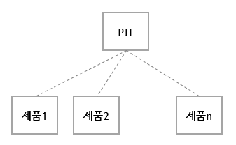

Smart Premiere / Feature 01 - Responsive Web(반응형 웹)
스마트 프리미어의 주요 기능입니다.
-
1. 다양한 기종 장비 지원
사용자가 PC, 모바일에서 손쉽게 사용할 수 있도록 구현하였습니다.
(It has been implemented so that users can easily use it on PC or mobile.)
2. SMTP 서비스 지원
오픈소스 PHPmailer를 적용하여 계정 분실 시 비밀번호를 찾을 수 있도록 구현하였습니다.
(By applying the open source PHPmailer,
it has been implemented so that you can find the password if you lose your account.)
다양한 SMTP를 지원하며, 구글, 네이버, 다음 등의 범용 SMTP를 지원합니다.
(It supports a variety of SMTP and supports general-purpose SMTP such as Google, Naver, and Daum.)
3. 그래프 및 데이터 분석 현황
대시보드에서 입출고 현황을 1달 단위, 1년 단위로 그래프로 출력할 수 있도록 구현하였습니다.
(It has been implemented so that the status of incoming and outgoing can be displayed
on the dashboard in graphs by month and year.)
4. 프로젝트 내 다수 제품 생성 지원
하나의 프로젝트 내에 다수 제품이 존재할 수 있도록 구현하였습니다.
(It is implemented so that multiple products can exist within one project.)

5. 프로젝트, 제품 검색 기능 지원
다양한 제품은 상위 개념인 프로젝트를 자유롭게 선택할 수 있도록 검색기능을 지원합니다.
(Various products support the search function so that you can freely select a project,
which is a higher concept.)
6. 센서의 정보 출력
스마트프리미어 Iot를 통해서 구현된 센서들은 현장의 장비들을 감시하여 정보를 제공합니다.
예를 들면, 온습도, 충격 감지, 초음파 센서 등의 정보가 될 수 있습니다.
(The sensors implemented through Smart Premier IoT provide information by monitoring equipment in the field.
For example, it can be information such as temperature and humidity, shock detection, and ultrasonic sensor.)
자세한 내용은 Smart Premiere Iot에서 소개합니다.
(More details are introduced in Smart Premiere IoT.)
7. 스마트프리미어 IoT 외 설비 보안 지원
스마트프리미어 IoT의 고유키인 UUID를 할당하여 설비의 유효한 정보를 수집할 수 있도록
개발하였습니다.
(It was developed to collect valid information of facilities by allocating UUID,
which is the unique key of Smart Premier IoT.)
8. 제품 - 박스 생성 기능 지원
제품에서 박스 형태로 식별 및 수정할 수 있도록 기능을 지원하였습니다.
(The product supports the function to identify and modify in the form of a box.)
9. 게시판 기능 지원
업무에 있어서 의사소통 기능을 보완하여 유연한 문화가 될 수 있도록 하였습니다.
(By supplementing the communication function in work, we have made it a flexible culture.)
-
비고(Description):